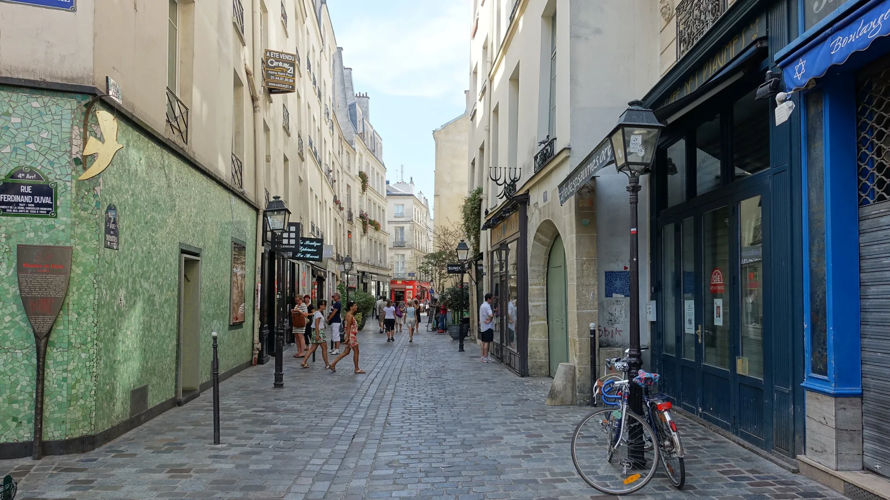

{kind=link}
관광·미술관
Nous avons déjà des billets.
이미 표가 있습니다.
누 자봉 데자 데 비예

파리 3구와 4구에 걸쳐 센 강 우안에 펼쳐진 중세의 조약돌 골목망과 17세기 귀족 대저택, 현대의 패션과 예술이 완벽하게 융합된 파리 최고의 문화·주거 지구(유네스코 보호구역)이다.
과거 늪지대(Marais)였던 곳을 앙리 4세가 개발하면서 귀족들의 우아한 석조 저택인 '오텔 파르티퀼리에(Hôtel particulier)'가 들어섰으며, 1960년대 앙드레 말로 문화부 장관의 역사지구 보존법에 힘입어 오스만 남작의 근대 도시 개조 속에서도 중세와 르네상스의 좁고 정겨운 골목 구조를 기적적으로 보존해 냈다.
파리에서 가장 완벽한 대칭을 자랑하는 붉은 벽돌의 보주 광장(Place des Vosges), 프랑스 역사 박물관 카르나발레(Musée Carnavalet), 유대인 전통 베이커리와 팔라펠로 유명한 로지에 거리(Rue des Rosiers), 그리고 북마레(Haut-Marais)의 감각적인 디자이너 편집숍과 유서 깊은 식료품 시장 마르셰 데 앙팡 루주(Marché des Enfants Rouges)까지 다채로운 지층이 펼쳐진다.
"넓은 오스만 대로를 벗어나, 자갈 깔린 좁은 골목을 굽이돌며 숨겨진 안뜰 정원과 독립 부티크, 트렌디한 카페 테라스를 목적 없이 거니는 플라뇌르(Flâneur, 도시 산책자)의 즐거움이 가장 극대화되는 동네다." 보주 광장의 회랑 벤치에서 시작해 로지에 거리를 지나 북마레의 앙팡 루주 시장에서 길거리 음식을 즐기는 2~3시간 도보 여정이 필수적이다.
| 운영시간 | Musée Carnavalet 화–일 10:00–18:00 (매표 17:15 마감) |
|---|---|
| 휴무 | Musée Carnavalet 월요일 휴관 (화–일 개관) |
| 요금 | 무료 |
| 예약 | Musée Carnavalet 상설전 무료·예약 불필요 / 기획전은 유료 온라인 사전예약 권장 |
| 항목 | 상세 정보 |
|---|---|
| 위치 | 3e & 4e arrondissements, 75003/75004 Paris |
| 입장료 | 야외 거리, 보주 광장, 쉴리 저택 정원 무료 |
| 교통 접근 | 메트로 1호선 Saint-Paul역 (남마레 진입), 메트로 8호선 Chemin Vert역 (보주 광장), 메트로 8호선 Filles du Calvaire역 (북마레 진입) |
| 쇼핑 & 시장 팁 | 마레 지구는 일요일에도 대부분의 상점과 갤러리가 정상 영업하는 파리의 몇 안 되는 일요일 쇼핑 중심지 (단, 일요일 오후 극심한 혼잡 주의) |
Nous avons déjà des billets.
이미 표가 있습니다.
누 자봉 데자 데 비예
On peut prendre des photos ?
사진 찍어도 되나요?
옹 푀 프랑드르 데 포토
Où commence la visite ?
관람은 어디서 시작하나요?
우 코망스 라 비지트

1868년 앙리 라브루스트가 주철 기둥과 9개 도자기 돔으로 완성한 19세기 건축의 걸작 '라브루스트 열람실'과 일반에 전면 무료 개방된 거대한 타원형 '오발 열람실(Salle Ovale)', 프랑스 국립도서관 박물관.

18세기 원형 곡물거래소를 세계적인 건축가 안도 다다오가 노출 콘크리트 원통 실린더로 리노베이션한 현대미술관. 프랑수아 피노 회장의 세계적 현대미술 컬렉션과 1889년 돔 천장 무역 파노라마 프레스코화.

렌조 피아노와 리처드 로저스가 건물 배관과 골격을 외벽으로 노출시킨 20세기 하이테크 건축의 전설이자 유럽 최대 근현대미술관. ⚠ 2025년 가을부터 2030년까지 전면 개보수 공사로 본관 폐관 중.

클로드 모네가 43년간 직접 꽃과 연못을 가꾸며 불후의 『수련』 대작을 창조해낸 살아있는 인상파 캔버스. 초록색 일본식 다리가 걸린 '물의 정원(Jardin d'eau)'과 핑크빛 모네 생가 아틀리에.

1900년 파리 만국박람회를 위해 건립된 45m 높이 아르누보 철골 유리 네이브(Nave)의 기념비적 국립 전시장. 2024 파리 올림픽을 거쳐 리노베이션 완료 후 재개관한 파리 문화 예술의 중심지.

중세 소르본 대학 교수와 학생들이 공용어로 라틴어를 쓰던 데서 유래한 800년 파리 지성의 요람이자 센 강 좌안(Rive Gauche)의 심장. 프랑스 위인들의 성소 팡테옹(Panthéon), 셰익스피어 앤 컴퍼니, 뤽상부르 공원.